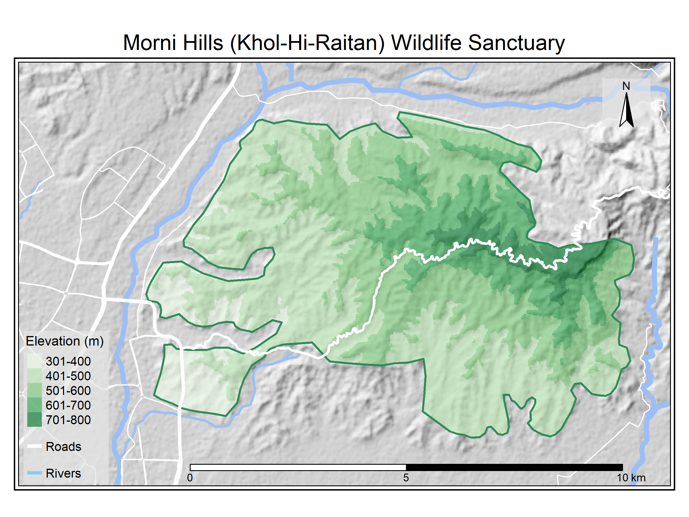

A short description and introduction to Khol Hi-Raitan Wildlife Sanctuary.

Various developmental activities and requirements of local people have brought significant ecological changes and degradation in the Siwalik Hills of the Inter State Chandigarh Region.
Siwalik landscape has been identified as one of the most degraded ecosystems of India primarily due to its fragile soil resulting in heavy soil erosion. Weathering and erosion in this area has produced a variety of erosional land-form features. The seasonal streams commonly called choes run from NE to SW descend into the valleys. On an average more than 50% of the total rain in the Siwalik ends in run-off. At foothills, artificial Sukhna lake was constructed in 1958 for water storage, however, it is facing siltation problem due to erosion and sedimentation from Siwalik hills (Y. Singh 2002). The Chandigarh Siwalik hills and Morni hills are separated by the Ghaggar river (Y. Singh 2001). Tikkar taal is a natural lake at the site and known to support several diatoms (Saini, Khanagwal, and Singh 2017). Water from natural resources have been reported to contain varying amount of Uranium and Radon indicating their presence in the rocks in the area (Joga Singh et al. 2008b, 2008a, 2009). The soils also have varying degree of Uranium, Radium and Radon (Pundir, Rajinder, and Sunil 2014; Joga Singh et al. 2008b).
An area of 2,226.58 ha was initially notified as R-70 Khol Hi-Raitan (KHR) Wildlife Sanctuary on 10 December 2004 with Gazette notification No. S.O. 269/C.A. 53/1972/S. 26-A/2004 by Forest Department of Government of Haryana.1 Later, the forest area was identified to cover a total of 2,656.38 ha and declared as wildlife sanctuary on 07 September 2007 with gazette notification No. S.O. 71/C.A. 53/1972/S.26/2007.
The eco-sensitive zone (ESZ) around KHR was proposed as area within five kilometres of the boundary on 03 June 2009 with notification No. S.O. 1394 (E).
Figure 1: Ecosensitive Zone (ESZ) of Khol Hi-Raital wildlife sanctuary as drafted in September 2009. Figure from https://cdnbbsr.s3waas.gov.in/s3c5866e93cab1776890fe343c9e7063fb/uploads/2021/05/2021052022-1.jpg
However, the proposal has been revised in another draft No. S.O. 1395 (E) dated 21 May 2015 and the ESZ has been revised to vary from zero to 925 meters only.
Figure 2: Ecosensitive Zone (ESZ) of Khol Hi-Raital wildlife sanctuary as drafted in May 2015. Figure from https://moef.gov.in/wp-content/uploads/2019/10/Map-of-ESZ-of-Khol-Hi-Ratan-WLS-Haryana.pdf
The Morni hills are rich in diversity of flora as well as fauna. The site is inhabited by diverse group of non-primates (Chopra, Bhoombak, and Kumar 2013). As many as 156 birds can be observed at lower Siwalik foothills (Chopra and Sharma 2014).
Palynostratigraphical studies of Subathu formation revealed the presence of dinoflagellates cysts, acritarch, fungal spores and ascostroma, pteridophytic spores, and pollen grains of gymnosperms and angiosperms (Sarkar and Prasad 2000). The Siwalik hills probably hosted a luxuriant vegetation in the pre-glacial times in view of rich and varied flora and fauna discovered from wide and distant localities in them. The account of the present-day flora and fauna shows that much has been lost in the last 150 years or more. Vegetation is analysed in three forest types of the site up to a limited extent previously (Rout and Gupta 1989). Several attempts have been made to document the plant diversity of the region (Jain2001?). Orchids are poorly represented and only three orchids (Habenaria plantaginea Lindl., Rhynchostylis retusa Bl. and Zeuxine strateumatica (L.) Schltr.) have been reported from Haryana state (Jain2000?; Kumar2001?). Another orchid (Eulophia dabia (D.Don) Hochr.) was later added to the state’s flora (Vij and Verma 2005). Studies have clearly shown that the vegetation of Morni hills is under threat and as many as 61 species have been disappeared since 2000 (S. Singh et al. 2014).
Land-use changes (in terms of controlled grazing and increased agriculture), physical structures for water harvesting and vegetation (especially grasses) have significantly reduced erosion and sedimentation. Erosion control combined with land-use changes has resulted in increased the biomass productivities of agriculture, timber and fodder (Scott and Walter 1993). Further, watershed development activities have also contributed the increase in vegetation cover and reduction in soil loss due to high water runoff (O. Singh, Sharma, and Singh 2016). The local inhabitants already know that some plants are more effective in controlling soil erosion. For example, perennial Jhoond grass (Saccharum bengalense) and Bhabbar grass (Eulaliopsis binata) that is thought to be symbiotic with Khair (Acacia catechu), is used to prevent soil erosion (Scott and Walter 1993). Similarly, another plant called Jhingan (Lannea coromandelica) and vegetative barriers of Agave is used as fence for the fields and to stabilize eroding slopes, respectively (Scott and Walter 1993). The utilization various plants as a source of medicine, food, fodder, fibre, gum and dye indicate their socio-economic importance to the local people (J. Singh, Singh, and Laxmi 2017). More than 300 species from the Morni hills only are reported to be of medicinal importance (Balkrishna et al. 2018). Some of Lamiaceous plants possess anti-oxidant properties (S. Singh et al. 2014). Barberry (Berberis aristata DC.) from the hills have been implicated for dyeing the silk (Pruthi, Chawla, and Yadav 2008). Man-made disturbances especially Tourism can potentially threaten the biodiversity and ecological balance. Though tourism may offer economic development, there are also increased chances of habitat degradation and biodiversity loss (Chand 2015). Several trees of the area serve as sleeping site for near threatened Hanuman Langurs (Chopra, Bhoombak, and Kumar 2012).
The Lower Shivaliks are dominated by alluvial sediments chiefly consisting of loose sand and gravel inserted with clay horizons. Soil is clay loam or silt loam and underlying rocks are soft sandstones that are prone to erosion and result in high water runoff (Rout and Gupta 1990b). The alkali soils of the region are low in organic matter and deficient in nutrients, probably due to minimal leaf litter (Kumar et al. 1995).
The Siwalik Hills experience Koeppen’s Cwg category climate based on annual and monthly means of temperature and rainfall (Koeppen, 1936). The climatic data of Chandigarh suggests that the Chandigarh Siwalik Hills have BSh category climate. For general vegetation there are two major growth periods February to March (Spring) and rainy months of July and August. Leaf fall for non-evergreen vegetation is experienced during October to November (Autumn). Climate is monsoonal, average rainfall of the area is 1069 mm and major portion of the rainfall occurs during June to September. The year is divisible into three seasons, warm wet rainy season (June to September), cool dry winter season (October to March) and hot dry summer season (April to May).
The forest floor litter mass, litter fall, herbaceous biomass and the nutrient content of litter showed significant seasonal variations due to site and tissues in subtropical forest ecosystems of Siwalik hills (Rout and Gupta 1990a). Litter chemical quality controls the rate of leaf-litter decomposition measured as carbon dioxide evolution rates from the soil (Rout and Gupta 1987). Attempts have been made to estimate above ground biomass using Spectral modelling (Kumar et al. 2011).
World Herbal Project2
{kind=link}